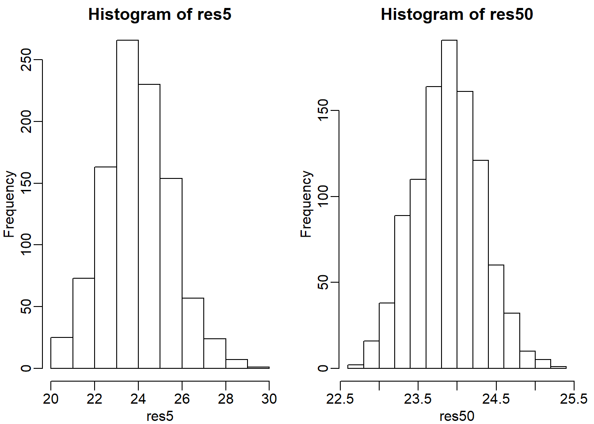
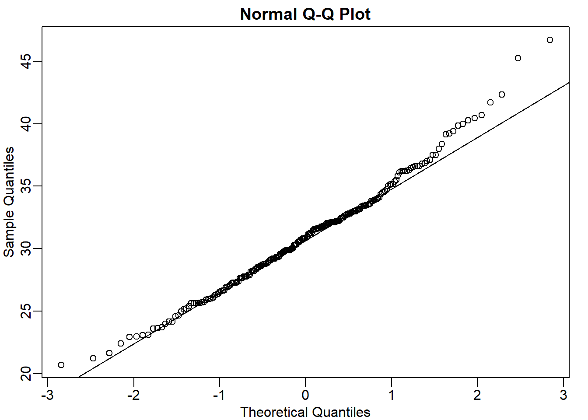
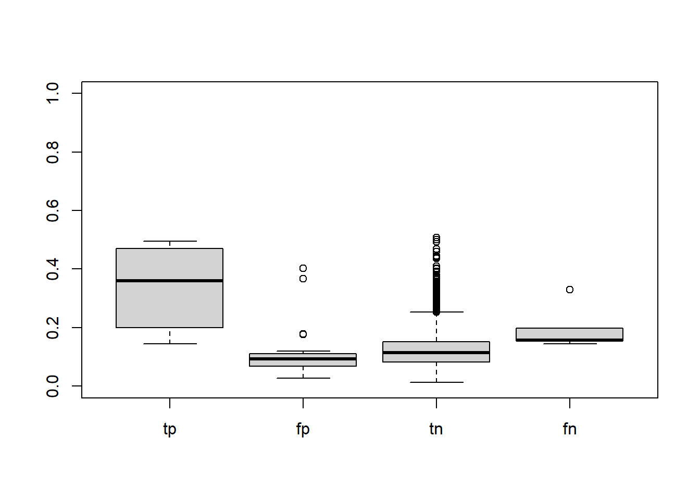
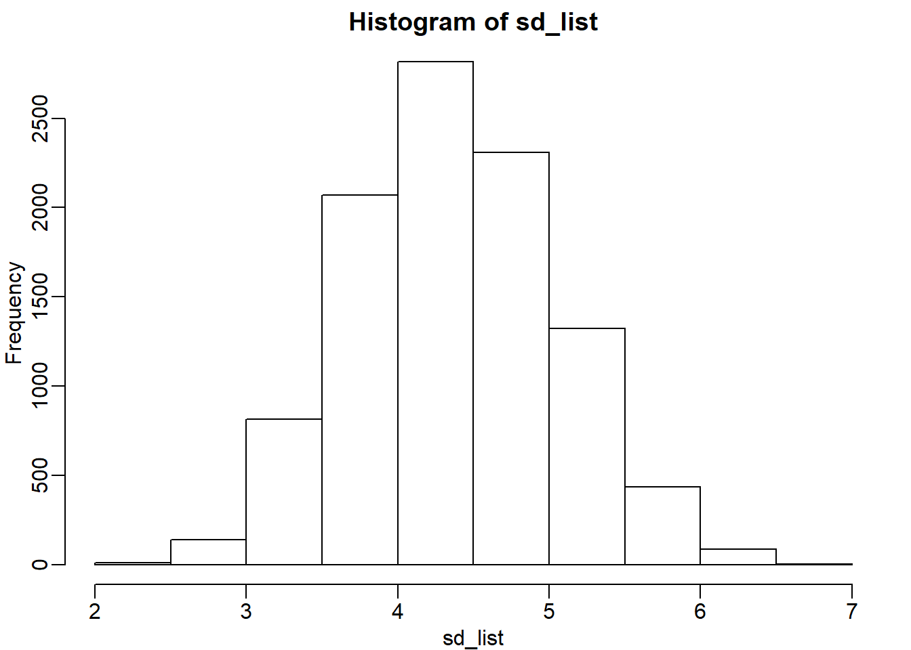

Chapter 2 Inference
First, upload necessary package(s).
2.1 Ch 2.7 Exercises
If you have not downloaded the data before,
dir <- "https://raw.githubusercontent.com/genomicsclass/dagdata/master/inst/extdata/"
filename <- "femaleControlsPopulation.csv"
url <- paste0(dir, filename)
x <- unlist(read.csv(url))Or if you already have downloaded the data, then just upload it.
dat <- read.csv('femaleControlsPopulation.csv')
bodyweight <- select(dat, Bodyweight)
x <- unlist(bodyweight)
# or use pipe %>%
x <- read.csv('femaleControlsPopulation.csv') %>% select(Bodyweight) %>% unlist()Check out what unlist does by typing ?unlist in the command. The second method is more concise because of the pipe %>%, which allows multiple lines of commands to be in one continuous line.
2.1.1 Question 1
What is the average of these weights?
## [1] 23.893382.1.2 Question 2
After setting the seed at 1, set.seed(1) take a random sample size 5. What is the absolute value (use abs) of the difference between the average of the sample and the average of all the values?
set.seed(1)
avg_sample <- mean(sample(x,5)) # average of the sample of 5
avg_pop <- mean(x) # average of all values
abs(avg_sample - avg_pop) # absolute difference## [1] 0.27062222.1.3 Question 3
After setting the seed at 5, set.seed(5) take a random sample size 5. What is the absolute value (use abs) of the difference between the average of the sample and the average of all the values?
set.seed(5)
avg_sample <- mean(sample(x,5)) # average of the sample of 5
avg_pop <- mean(x) # average of all values
abs(avg_sample - avg_pop) # absolute difference## [1] 1.4333782.1.4 Question 4
Why are the answers from 2 and 3 different?
## Bodyweight60 Bodyweight84 Bodyweight128 Bodyweight202
## 21.51 28.14 24.04 23.45
## Bodyweight45
## 23.68## Bodyweight46 Bodyweight154 Bodyweight205 Bodyweight64
## 21.86 20.30 22.95 21.92
## Bodyweight24
## 25.27## [1] FALSENotice that samples a and b differ. Since the seeds were different (1 vs 5), different random numbers were generated. Therefore, the answer is C: Because the average of the samples is a random variable.
2.1.5 Question 5
Set the seed at 1, then using a for-loop take a random sample of 5 mice in 1,000 times. Save these averages. What percent of these 1,000 averages are more than 1 gram away from the average of x?
set.seed(1)
n <- 1000
res <- vector('double',n)
for (i in seq(n)) {
avg_sample <- mean(sample(x,5))
res[[i]] <- avg_sample
}
mean(abs(res-mean(x)) > 1)## [1] 0.498To make a for loop work in R, an empty vector needs to be created first. This can be achieved with the function vector. In this example, the empty vector is res (short for result). In the for loop, each average (avg_sample) from one repetition gets stored in res.
2.1.6 Question 6
We are now going to increase the number of times we redo the sample from 1,000 to 10,000. Set the seed at 1, then using a for-loop take a random sample of 5 mice 10,000 times. Save these averages. What percent of these 10,000 averages are more than 1 gram away from the average of x?
set.seed(1)
n <- 10000
res <- vector('double',n)
for (i in seq(n)) {
avg_sample <- mean(sample(x,5))
res[[i]] <- avg_sample
}
mean(abs(res-mean(x)) > 1)## [1] 0.49762.1.7 Question 7
Note that the answers to 5 and 6 barely changed. This is expected. The way we think about the random value distributions is as the distribution of the list of values obtained if we repeated the experiment an infinite number of times. On a computer, we can’t perform an infinite number of iterations so instead, for our examples, we consider 1,000 to be large enough, thus 10,000 is as well. Now if instead we change the sample size, then we change the random variable and thus its distribution.
Set the seed at 1, then using a for-loop take a random sample of 50 mice 1,000 times. Save these averages. What percent of these 1,000 averages are more than 1 gram away from the average of x?
set.seed(1)
n <- 1000
res <- vector('double',n)
for (i in seq(n)) {
avg_sample <- mean(sample(x,50))
res[[i]] <- avg_sample
}
mean(abs(res-mean(x)) > 1)## [1] 0.0192.1.8 Question 8
Use a histogram to “look” at the distribution of averages we get with a sample size of 5 and sample size of 50. How would you say they differ?
# sample size = 5
set.seed(1)
n <- 1000
res5 <- vector('double',n)
for (i in seq(n)) {
avg_sample <- mean(sample(x,5))
res5[[i]] <- avg_sample
}
sd(res5) # standard deviation = spread of the histogram## [1] 1.52445# sample size = 50
set.seed(1)
n <- 1000
res50 <- vector('double',n)
for (i in seq(n)) {
avg_sample <- mean(sample(x,50))
res50[[i]] <- avg_sample
}
sd(res50) # standard deviation = spread of the histogram## [1] 0.4260116
mypar is a function from the package rafalib. It helps to align multiple plots in a single plot. mypar(1,1) contains one panel only, mypar(2,1) contains 2 rows of panels and 1 column, mypar(1,2) contains 1 row of panels and 2 columns, etc. Type ?mypar for more information. hist plots a histogram.
The answer is B: They both look normal, but with a sample size of 50 the spread is smaller.
2.1.9 Question 9
For the last set of averages, the ones obtained from a sample size of 50, what percent are between 23 and 25?
## [1] 0.9762.1.10 Question 10
Now ask the same question of a normal distribution with average 23.9 and standard deviation 0.43.
## [1] 0.9765648The answers to 9 and 10 were very similar. This is because we can approximate the distribution of the sample average with a normal distribution. We will learn more about the reason for this next.
2.2 Ch 2.9 Exercises
If you have not downloaded the data before:
dir <- "https://raw.githubusercontent.com/genomicsclass/dagdata/master/inst/extdata/"
filename <- "mice_pheno.csv"
url <- paste0(dir, filename)
dat <- read.csv(url)
dat <- na.omit(dat)If you have the data already in your directory:
2.2.1 Question 1
Use dplyr to create a vector x with the body weight of all males on the control (chow) diet. What is this population’s average?
## [1] 30.96381Throughout the book, I will be using %>% for brevity. If you don’t understand it, please check out Chapter 18 of *R for Data Science.
2.2.2 Question 2
Now use the rafalib package and use the popsd function to compute the population standard deviation.
## [1] 4.4205012.2.3 Question 3
Set the seed at 1. Take a random sample X of size 25 from x. What is the sample average?
## [1] 32.09562.2.4 Question 4
Use dplyr to create a vector y with the body weight of all males on the high fat (hf) diet. What is this population’s average?
## [1] 34.847932.2.5 Question 5
Now use the rafalib package and use the popsd function to compute the population standard deviation.
## [1] 5.5746092.2.6 Question 6
Set the seed at 1. Take a random sample Y of size 25 from y. What is the sample average?
## [1] 34.7682.2.7 Question 7
What is the difference in absolute value between \(\bar{y}-\bar{x}\) and \(\bar{Y}-\bar{X}\)?
pop_diff <- mean(y) - mean(x)
sample_diff <- mean(samp_y) - mean(samp_x)
abs(sample_diff - pop_diff)## [1] 1.2117162.2.8 Question 8
Repeat the above for females. Make sure to set the seed to 1 before each sample call. What is the difference in absolute value between \(\bar{y}-\bar{x}\) and \(\bar{Y}-\bar{X}\)?
chow_f_pop <- dat %>% filter(Sex == 'F' & Diet == 'chow') %>%
select(Bodyweight) %>% unlist() # x
hf_f_pop <- dat %>% filter(Sex == 'F' & Diet == 'hf') %>%
select(Bodyweight) %>% unlist() # y
set.seed(1)
sample_chow_f_pop <- sample(chow_f_pop, 25) # X
sample_hf_f_pop <- sample(hf_f_pop,25) # Y
pop_diff <- mean(hf_f_pop) - mean(chow_f_pop) # y - x
sample_diff <- mean(sample_hf_f_pop) - mean(sample_chow_f_pop) # Y - X
abs(sample_diff - pop_diff)## [1] 0.078882782.2.9 Question 9
For the females, our sample estimates were closer to the population difference than with males. What is a possible explanation for this?
ans <- c(popsd(hf_f_pop), popsd(chow_f_pop), popsd(y), popsd(x))
names(ans) <- c('hf female', 'chow female', 'hf male', 'chow male')
ans## hf female chow female hf male chow male
## 5.069870 3.416438 5.574609 4.420501The answer is A: The population variance of the females is smaller than that of the males; thus, the sample variable has less variability.
2.3 Ch 2.11 Exercises
If you have not downloaded the data before:
dir <- "https://raw.githubusercontent.com/genomicsclass/dagdata/master/inst/extdata/"
filename <- "mice_pheno.csv"
url <- paste0(dir, filename)
dat <- read.csv(url)
dat <- na.omit(dat)If you have the data already in your directory:
2.3.1 Question 1
If a list of numbers has a distribution that is well approximated by the normal distribution, what proportion of these numbers are within one standard deviation away from the list’s average?
## [1] 0.68268952.3.2 Question 2
What proportion of these numbers are within two standard deviations away from the list’s average?
## [1] 0.95449972.3.3 Question 3
What proportion of these numbers are within three standard deviations away from the list’s average?
## [1] 0.99730022.3.4 Question 4
Define y to be the weights of males on the control diet. What proportion of the mice are within one standard deviation away from the average weight (remember to use popsd for the population sd)?
y <- dat %>% filter(Sex == 'M' & Diet == 'chow') %>%
select(Bodyweight) %>% unlist()
z_score <- (y - mean(y))/popsd(y) # get t-statistic (i.e., z score)
mean(abs(z_score) <= 1)## [1] 0.6950673## [1] 0.69506732.3.5 Question 5
What proportion of these numbers are within two standard deviations away from the list’s average?
## [1] 0.9461883## [1] 0.94618832.3.6 Question 6
What proportion of these numbers are within three standard deviations away from the list’s average?
2.3.7 Question 7
Note that the numbers for the normal distribution and our weights are relatively close. Also, notice that we are indirectly comparing quantiles of the normal distribution to quantiles of the mouse weight distribution. We can actually compare all quantiles using a qq-plot. Which of the following best describes the qq-plot comparing mouse weights to the normal distribution?

The answer is C: The mouse weights are well approximated by the normal distribution, although the larger values (right tail) are larger than predicted by the normal.This is consistent with the differences seen between question 3 and 6.
2.3.8 Question 8
Create the above qq-plot for the four populations: male/females on each of the two diets. What is the most likely explanation for the mouse weights being well approximated? What is the best explanation for all these being well approximated by the normal distribution?
mc <- dat %>% filter(Sex == 'M' & Diet == 'chow') %>%
select(Bodyweight) %>% unlist()
mhf <- dat %>% filter(Sex == 'M' & Diet == 'hf') %>%
select(Bodyweight) %>% unlist()
fc <- y <- dat %>% filter(Sex == 'F' & Diet == 'chow') %>%
select(Bodyweight) %>% unlist()
fhf <- y <- dat %>% filter(Sex == 'F' & Diet == 'hf') %>%
select(Bodyweight) %>% unlist()
mypar(2,2)
qqnorm(mc, main = 'male control pop')
qqline(mc)
qqnorm(mhf, main = 'male high fat pop')
qqline(mhf)
qqnorm(fc, main = 'female control pop')
qqline(fc)
qqnorm(fhf, main = 'female high fat pop')
qqline(fhf)
The answer is B: This just happens to be how nature behaves. Perhaps the result of many biological factors averaging out.
2.3.9 Question 9
Here we are going to use the function replicate to learn about the distribution of random variables. All the above exercises relate to the normal distribution as an approximation of the distribution of a fixed list of numbers or a population. We have not yet discussed probability in these exercises. If the distribution of a list of numbers is approximately normal, then if we pick a number at random from
this distribution, it will follow a normal distribution. However, it is important to remember that stating that some quantity has a distribution does not necessarily imply this quantity is random. Also, keep in mind that this is not related to the central limit theorem. The central limit applies to averages of random variables. Let’s explore this concept.
We will now take a sample of size 25 from the population of males on the chow diet. The average of this sample is our random variable. We will use the replicate to observe 10,000 realizations of this random variable. Set the seed at 1, generate these 10,000 averages. Make a histogram and qq-plot of these 10,000 numbers against the normal distribution.
We can see that, as predicted by the CLT, the distribution of the random variable is very well approximated by the normal distribution.
y <- filter(dat, Sex=="M" & Diet=="chow") %>% select(Bodyweight) %>% unlist
avgs <- replicate(10000, mean( sample(y, 25)))
mypar(1,2)
hist(avgs)
qqnorm(avgs)
qqline(avgs)What is the average of the distribution of the sample average?
m <- 10000
n <- 25
y <- filter(dat, Sex=="M" & Diet=="chow") %>%
select(Bodyweight) %>% unlist
set.seed(1)
avg_list <- replicate(m, {
mean(sample(y,25))
})
mypar(1,2)
hist(avg_list) # distribution
qqnorm(avg_list) # qq-plot
qqline(avg_list)
## [1] 30.955812.3.10 Question 10
What is the standard deviation of the distribution of sample averages?
## [1] 0.83681922.3.11 Question 11
According to the CLT, the answer to exercise 9 should be the same as mean(y). You should be able to confirm that these two numbers are very close. Which of the following does the CLT tell us should be close to your answer to exercise 10?
## [1] 0.88410012.3.12 Question 12
In practice we do not know \(\sigma\) (popsd(y)) which is why we can’t use the CLT directly. This is because we see a sample and not the entire distribution. We also
can’t use popsd(avgs) because to construct averages, we have to take 10,000 samples and this is never practical. We usually just get one sample. Instead we have to estimate popsd(y). As described, what we use is the sample standard
deviation. Set the seed at 1, using the replicate function, create 10,000 samples of 25 and now, instead of the sample average, keep the standard deviation. Look at the distribution of the sample standard deviations. It is a random variable. The real population SD is about 4.5. What proportion of the sample SDs are below 3.5?

## [1] 0.09642.3.13 Question 13
What the answer to question 12 reveals is that the denominator of the t-test is a random variable. By decreasing the sample size, you can see how this variability can increase. It therefore adds variability. The smaller the sample size, the more variability is added. The normal distribution stops providing a useful approximation. When the distribution of the population values is approximately normal, as it is for the weights, the t-distribution provides a better approximation. We will see this later on. Here we will look at the difference between the t-distribution and normal. Use the function qt and qnorm to get the quantiles of x=seq(0.0001,0.9999,len=300). Do this for degrees of freedom 3, 10, 30, and 100. Which of the following is true?
x = seq(0.0001, 0.9999, len = 300)
df_list <- c(3,10,30,100)
mypar(2,2)
for (i in seq_along(df_list)) {
qqnorm(qt(x,df_list[i]), main = df_list[i])
}
The answer is C: The t-distribution has larger tails up until 30 degrees of freedom, at which point it is practically the same as the normal distribution.
2.4 Ch. 2.13 Exercises
dir <- "https://raw.githubusercontent.com/genomicsclass/dagdata/master/inst/extdata/"
filename <- "femaleMiceWeights.csv"
url <- paste0(dir, filename)
dat <- read.csv(url)2.4.1 Question 1
The CLT is a result from probability theory. Much of probability theory was originally inspired by gambling. This theory is still used in practice by casinos. For example, they can estimate how many people need to play slots for there to be a 99.9999% probability of earning enough money to cover expenses. Let’s try a simple example related to gambling.
Suppose we are interested in the proportion of times we see a 6 when rolling n=100 die. This is a random variable which we can simulate with x=sample(1:6, n, replace=TRUE) and the proportion we are interested in can be expressed as an average: mean(x==6). Because the die rolls are independent, the CLT applies.
We want to roll n dice 10,000 times and keep these proportions. This random variable (proportion of 6s) has mean p=1/6 and variance p*(1-p)/n. So according to CLT
z = (mean(x==6) - p) / sqrt(p*(1-p)/n) should be normal with mean 0 and SD 1. Set the seed to 1, then use replicate to perform the simulation, and report what proportion of
times z was larger than 2 in absolute value (CLT says it should be about 0.05).
## [1] 0set.seed(1)
res_list <- replicate(B, {
x = sample(1:6,n, replace = T)
z <- (mean(x==6)-p) / sqrt(p*(1-p)/n)
return(z)
})
mean(abs(res_list) > 2)## [1] 0.0424